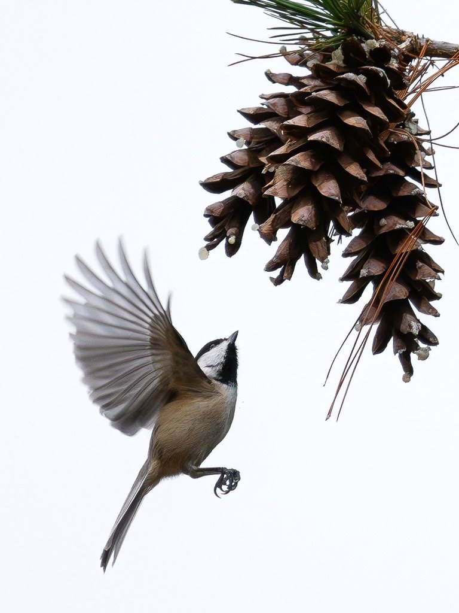

Claire Whiting
I study how adolescents and adults use language to understand and regulate their emotions, and how these processes relate to mental health.
I'm a fifth-year PhD student in the Psychology department at Princeton University, working with Erik Nook in the Logic of Emotion Lab. My work combines lab, online and field experiments, diary studies, large-scale text analysis and qualitative coding, and increasingly uses large language models in study design and analysis.
Two constructs I focus on
Linguistic distancing
Describing an experience with fewer first-person, present-tense words, as if seen from further away. My research asks whether this shift helps people regulate emotion or simply accompanies it.
Emotion differentiation
Describing feelings in precise, distinct terms rather than broad ones like “bad” or “stressed”. My research examines how this specificity relates to regulating emotions and mental health.
Research
Language and emotion regulation across ages
Four lab, online and field experiments (N = 4,293, including high school students) show that distanced language tracks successful emotion regulation rather than causing it.
Language as a marker of mental health
Using 600,000+ messages from roughly 7,000 adolescents on a text-based therapy platform, I examine how psychological distance and language complexity relate to anxiety and depression.
Writing to manage emotions
A 14-day, three-arm diary intervention (N = 159; 2,200+ entries) tested whether writing to oneself or to a close other improves mental health. Benefits differed by condition, and word-embedding measures of self-representation tracked daily emotions. I also led the thematic analysis of these entries. This work received the Best Poster (New Idea) Award from the Society for Affective Science in 2024.
AI for emotion research
I'm interested in applying AI across the research process, from study design to analysis. I'm currently developing an LLM chatbot that guides people through reappraising an upsetting experience, and an LLM-assisted pipeline for qualitative coding and thematic analysis of text.
Big team science
I'm leading a Psychological Science Accelerator study (PSA011) of 13,000+ participants across 25+ countries. We have run a US-based pilot (N = 200).
Treatment acceptability
Two experiments (N = 1,010) found that religiosity was associated with the acceptability of Mindfulness-Based Cognitive Therapy. Religious versus scientific framing did not change acceptability; addressing people's concerns did.
Selected publications
- Whiting, C., et al. (2026). Family accommodation of pediatric irritability: Development and psychometrics of the Family Accommodation Scale for Irritability. Behavior Therapy.
- Coles, N. A., … Whiting, C., et al. (2025). Big team science reveals promises and limitations of machine learning efforts to model the physiological basis of affective experience. Royal Society Open Science.
- Whiting, C., et al. (2023). Associations between sleep quality and irritability: Testing the mediating role of emotion regulation. Personality and Individual Differences.
- Whiting, C., & Nook, E. C. A systematic review of research on emotion differentiation and emotion regulation. In revision, Perspectives on Psychological Science.
Education
- 2022–2028
- PhD, Psychology, Princeton University (M.A. 2024; expected graduation June 2028)
- 2021–2022
- M.Res., Developmental Neuroscience & Psychopathology, University College London & Yale University, with DistinctionAt the Yale Child Study Center I developed and validated a measure of family accommodation of irritability, and linked fMRI activity during an emotional task to sleep in 9–15-year-olds.
- 2017–2020
- B.A. (Hons), Natural Sciences, University of Cambridge, Double FirstMy final-year project examined who is most susceptible to hallucinations induced through Pavlovian conditioning.
Beyond research

Princeton Better for Birds
Alongside my research, I work to protect birds on Princeton's campus and raise awareness of their conservation. The Princeton Better for Birds Project aims to reduce collisions and create a safer environment for them. As a University Administrative Fellow with the Center on Science and Technology, I contribute across the project, from data analysis and writing to running events and campus initiatives. We monitor bird collisions year-round, tend a pollinator garden, ran a competition to install student-designed window decals on campus, and host craft workshops and social events.
Teaching and mentoring
I've taught three semesters of psychology courses as a teaching assistant and am a McGraw Center Graduate Teaching Fellow. I've mentored 10 undergraduate researchers in our lab, including thesis students who have co-authored a manuscript under review and conference presentations with me. I received Princeton's Graduate School Teaching Award in 2026.
Advice for PhD applicants
I wrote a guide to applying to psychology PhD programs, covering how to choose labs, contact potential advisers, write a statement of purpose and prepare for interviews.